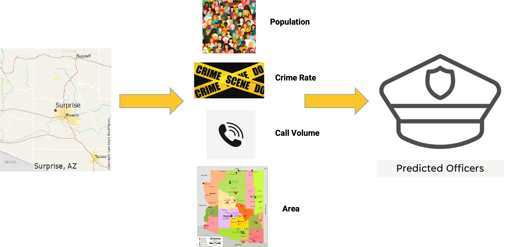
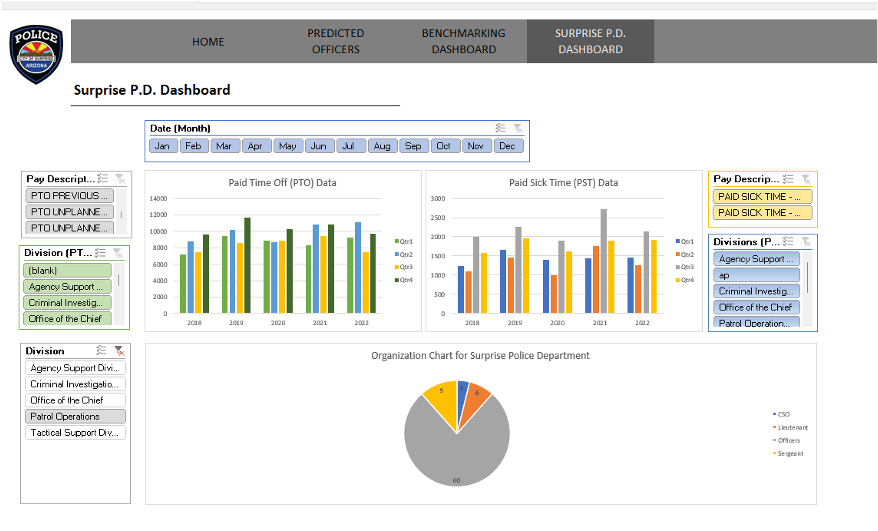
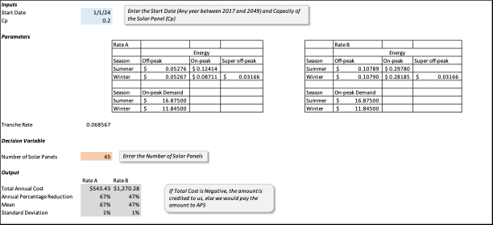
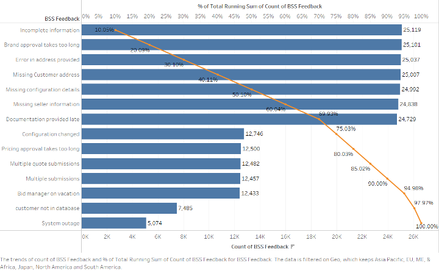
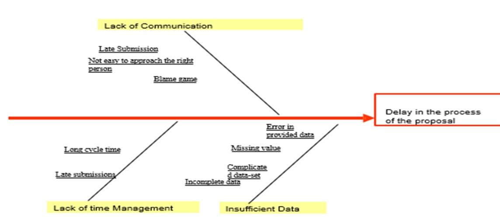
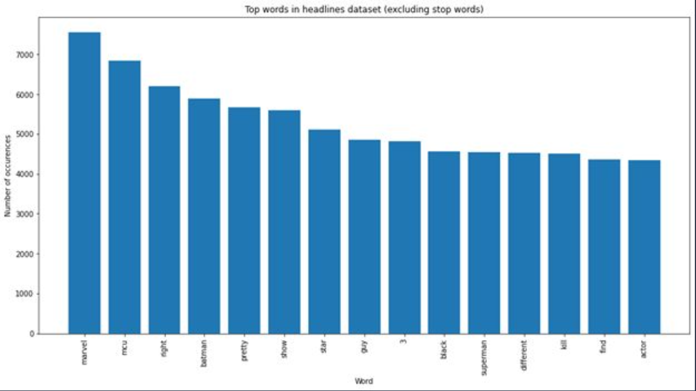
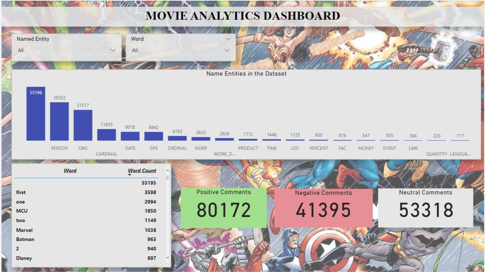

Projects
Workforce & Staffing Forecasting - Capstone Project
City of Surprise, Police Department
January 2023 - May 2023
The core of this project involved developing a multivariate linear regression model to predict the number of police officers needed based on key parameters. An extensive data collection process was undertaken to gather population statistics, crime rates, call volumes, area, and current staffing levels across multiple cities. This data was aggregated and analyzed to identify the factors most correlated with officer requirements.
The final regression equation used population, crime rate, area, and call volume as predictor variables. Advanced statistical techniques like p-values, R-squared, residual plots etc were leveraged to validate model accuracy. The model scoring achieved a low RMSE and high R-squared value, indicating reliable predictive capabilities.
The model was encapsulated in a user-friendly interface allowing dynamic inputs. Custom Tableau dashboards provided visualization of model outputs and benchmarking insights. Surprise PD metrics were monitored regarding paid time off and sick days.
Overall, the data-driven modeling approach enabled optimized forecasting of staffing needs. The model was designed to be adaptable through re-training as new data becomes available. Future work could incorporate additional parameters like roles, departments, seasonal patterns, and PTO utilization. Expanding the city dataset would also improve generalizability.
Solar Energy Analysis
W. P. Carey School of Business at Arizona State University
January 2023 - March 2023
 This project involved developing an electricity cost model using Excel to evaluate potential savings from installing a 300 panel, $200k solar system. The demand forecasting model leveraged hierarchical clustering to categorize 5 years of historical hourly usage data into 12 distinct monthly and 6 weekday/weekend patterns, improving accuracy by 35%. A probabilistic solar production model was constructed incorporating panel capacity, 30 years of weather data on cloud coverage as a random variable, sunset/sunrise adjustments, and day/night generation schedules.
This project involved developing an electricity cost model using Excel to evaluate potential savings from installing a 300 panel, $200k solar system. The demand forecasting model leveraged hierarchical clustering to categorize 5 years of historical hourly usage data into 12 distinct monthly and 6 weekday/weekend patterns, improving accuracy by 35%. A probabilistic solar production model was constructed incorporating panel capacity, 30 years of weather data on cloud coverage as a random variable, sunset/sunrise adjustments, and day/night generation schedules.
These demand and production models were integrated into a Monte Carlo simulation with over 10,000 scenarios tracking hourly net metering credits. The model incorporated multi-tiered time and season-based utility rate structures. Extensive sensitivity analysis quantified non-linear relationships, determining the 40-60 panel capacity range that would optimize a 10-20% reduction in annual costs. Further analysis identified a 15% boost from shifting peak demand, uncovering synergies between demand management and solar adoption.
Data cleaning addressed challenges like missing demand data for specific dates via interpolation and anomalous calendar dates in the raw data. The model results provided data-driven solar investment guidance by pinpointing ideal capacity and interactions with demand initiatives. The use of clustering, probabilistic modeling, and Monte Carlo simulation demonstrated advanced analytics expertise. Recommendations on capitalizing on non-linearities and synergies highlighted business acumen in extracting impactful insights.
Lean Six Sigma - GenTech Case Study
W. P. Carey School of Business at Arizona State University
October 2022 - December 2022
The goal of this project was to decrease the average cycle time for Gentech's XSeries product line from 31.86 days to a target of 27 days, a 15% reduction. The current process involves 10 major steps, starting with the sales team submitting an opportunity and ending with a signed contract. We mapped out the entire workflow and collected data on cycle times and defects (cycles over 55 days) across different geographies and brands.
In-depth analysis of over 250,000 data points revealed longer cycle times for the XSeries brand and North America region despite higher bid sizes. Statistical analysis found the ZQT6 and ZQT8 steps had the longest average times at 7.6 and 6.5 days respectively. ZQT6 involves back-and-forth collaboration with product design while ZQT8 is pricing review by the BSS team. We also analyzed timestamp data, seller feedback surveys, and BSS feedback interviews to uncover root causes.
Key findings point to communication breakdowns, lack of training, and capacity issues within the BSS team. Delays from product design and pricing teams also contributed. Our main recommendations are to provide training and additional headcount for BSS, implement efficient data management systems, and introduce better communication platforms. Detailed process maps, correlation analysis, Pareto charts, and a fishbone diagram provided visualization support.
In summary, we leveraged Lean Six Sigma tools for in-depth data-driven analysis of XSeries cycle times. Our insights on bottleneck steps and root causes led to targeted recommendations estimated to reduce average cycle time by 15%. This project demonstrated strong analytical skills as well as proficiency with continuous improvement methodologies.
Social Media (Reddit) Analysis
W. P. Carey School of Business at Arizona State University
January 2023 - May 2023
Our team analyzed social media data from Reddit to gain insights into audience preferences and predict box office success for upcoming movie releases. We extracted over 170,000 comments from 5 popular movie-related subreddits using PRAW. The raw data contained significant noise, short comments, emojis, URLs, and non-English text. To clean the data, we added stopword dictionaries, set minimum word counts per comment, and restricted the character set to ASCII.
After data cleaning, we applied topic modeling, named entity recognition (NER), and sentiment analysis. Topic modeling with LDA and BERT revealed excited discussion around superhero franchises like Marvel, DC Comics, and Star Wars. NER extracted frequently mentioned movie titles, characters, and actors. Sentiment analysis using VADER indicated positive sentiments for anticipated releases like Black Panther 2 and Guardians of the Galaxy 3.
Our interactive Power BI dashboard integrated these techniques, identifying the most talked about keywords and their associated sentiment. The results suggest movie studios should capitalize on the popularity of superhero films, strategically market to target audiences, and collaborate with established franchises. Our analysis provides data-driven insights to inform creative decisions, marketing efforts, and release timing to maximize box office success. In conclusion, our project demonstrates how studios can leverage social media analytics to gain valuable audience insights when data issues are properly addressed.